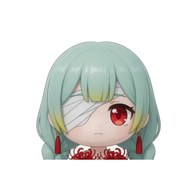

菲比攀登
正在整理登山裝備…
菲比
海灘
0 m
00:00
音效 開
暫停
▲
WASD 移動 ·
Space
跳／蹬牆 · 按住
F
／滑鼠左鍵 抓牆 ·
Shift
衝刺 ·
E
互動 ·
1-7
選道具 ·
Enter
使用 ·
Q
丟棄 · 右鍵拖曳 轉視角
抓牆
跳
互動
用道具
衝刺
COOP-STYLE CLIMB · 單人挑戰
菲比攀登
PEAK
墜機後孤身登頂。體力就是一切：飢餓、受傷、寒冷、負重都會壓縮你的體力上限。
菲比
平衡型・攀爬耗體力 -5%

弗洛洛
耐寒型・寒冷累積 -30%
路線
海灘 → 熱帶叢林 → 高山雪原 → 火山口，共 20 面岩壁
道具
36 種：食物、藥品、繩索、岩釘、鏈條發射槍、滑翔傘…
每日山
地圖依日期變化：
夥伴
瑞吉坐在帽子上，一路吼著「嗷嗷嗷」
出發登山
→
WASD 移動・Space 跳・按住 F 或滑鼠左鍵抓牆攀爬・E 打開行李箱
PEAK
回到標題